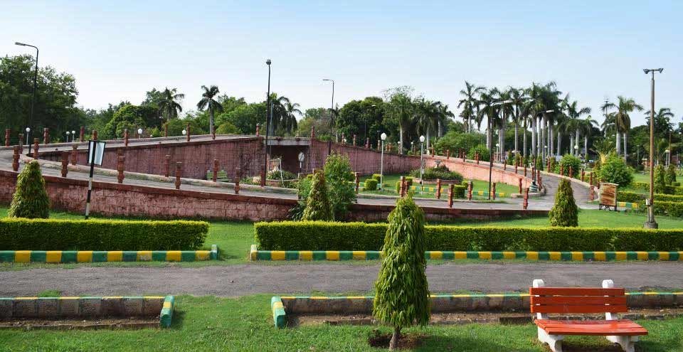

Kota Garh: The Royal Heritage
Kota Garh, also known as the City Palace, is a magnificent palace that reflects the royal heritage of Kota.
Fun Fact:
~It was built in the 18th century and showcases a blend of Mughal and Rajput architecture!
Things to Explore at Kota Garh:
-
The Museum:
Explore the museum housing artifacts from the royal family.
-
The Courtyards:
Stroll through the beautiful courtyards adorned with intricate carvings.
-
The Gardens:
Relax in the lush gardens surrounding the palace.
-
The Viewpoints:
Enjoy panoramic views of the city from various viewpoints.
-
The Cultural Events:
Attend cultural events and performances held in the palace grounds.
Why Visit Kota Garh?
!Because it’s a journey through Rajasthan’s royal past, filled with art, culture, and breathtaking views!

Chambal Garden: The Serene Escape
Chambal Garden is a beautiful garden located along the banks of the Chambal River, offering a peaceful escape from the city.
Fun Fact:
~It’s known for its lush greenery and serene ambiance, making it a perfect spot for relaxation!
Things to Explore at Chambal Garden:
-
The Riverfront:
Enjoy a leisurely walk along the riverfront, taking in the scenic views.
-
The Boating Area:
Experience boating on the Chambal River, surrounded by nature.
-
The Flora and Fauna:
Explore the diverse flora and fauna that thrive in the garden.
-
The Picnic Spots:
Relax at designated picnic spots with family and friends.
-
The Cultural Events:
Attend cultural events and festivals celebrated in the garden.
Why Visit Chambal Garden?
!Because it’s a tranquil oasis that offers a perfect blend of natural beauty and cultural experiences!
Kota Dussehra Mela: The Festive Extravaganza
Kota Dussehra Mela is a grand festival celebrated with great enthusiasm, showcasing the rich cultural heritage of Kota.
Fun Fact:
~It’s one of the largest fairs in Rajasthan, attracting thousands of visitors every year!
Things to Explore at Kota Dussehra Mela:
-
The Ramlila Performances:
Witness the spectacular Ramlila performances depicting the epic Ramayana.
-
The Food Stalls:
Savor delicious local delicacies and street food at various stalls.
-
The Cultural Programs:
Enjoy cultural programs featuring traditional music and dance performances.
-
The Shopping Stalls:
Shop for handicrafts, souvenirs, and traditional Rajasthani items.
-
The Carnival Rides:
Experience thrilling carnival rides and games for all ages.
Why Visit Kota Dussehra Mela?
!Because it’s a vibrant celebration that brings together culture, tradition, and joy in one place!

Kota Zoo: The Wildlife Haven
Kota Zoo is a well-maintained zoo that houses a variety of animals and birds, making it a great place for family outings.
Fun Fact:
~It’s home to several endangered species and plays a crucial role in wildlife conservation!
Things to Explore at Kota Zoo:
-
The Animal Enclosures:
Explore the spacious enclosures housing various species of animals.
-
The Aviary:
Visit the aviary that showcases a wide range of exotic birds.
-
The Botanical Garden:
Stroll through the botanical garden featuring diverse flora.
-
The Children’s Park:
Let your kids enjoy the play area designed for children.
-
The Educational Programs:
Participate in educational programs and workshops organized by the zoo.
Why Visit Kota Zoo?
!Because it’s a fun-filled day out that combines education, entertainment, and wildlife exploration!